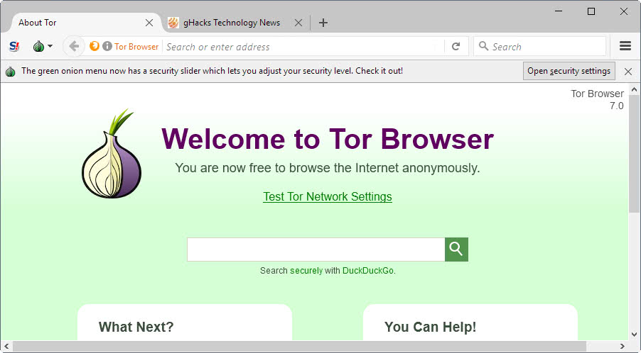

Drug Trade and The Internet

The Internet altered the structure of the illegal drug trade because it permits drugs to be
sold with discretion. Those who indulge in illegal substances are no longer limited to conducting
transactions on the street where risk being caught by police, receiving low quality product or being robbed. People are enabled by the Internet to purchase almost any illicit substance that
exists from any Internet enabled computer device. Suppliers of illegal substances also benefit
from the Internet because they are able to reach a larger pool of potential customers as well as
conceal their identity. Several “underground” online drug marketplaces have operated, however
Silk Road (now defunct) was the most notorious.

Silk Road was similar to the legal online marketplace Ebay where customers can leave
merchants public reviews and feedback regarding the product. The supplier can interact with
customers to answer questions regarding shipping time, payment and establish relationships with
clientele. Silk Road was located on the Deep Web which allowed the website to operate without
interference with law enforcement until it’s dissolution. The Deep Web is home to a portion
websites that are not indexed by mainstream search engines like Google and Bing. To gain
access into websites located in the Deep Web one has to use a browser called TOR. “ The Tor
software protects you by bouncing your communications around a distributed network of relays
run by volunteers all around the world: it prevents somebody watching your Internet connection
from learning what sites you visit, it prevents the sites you visit from learning your physical
location, and it lets you access sites which are blocked.(Tor Project) ” Tor complicates
pinpointing one's IP address which is an identification number for computers with Internet
access. One can figure out the physical location of a computer given an IP address.